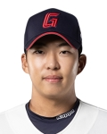
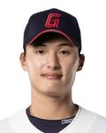

타자 편
|  | 이름/ 생년월일 |
등번호/ 포지션 |
경기 | 타수 | 타율 | 안타 | 2루타 | 3루타 | 홈런 | 타점 | 득점 | 도루 | 볼넷 | 삼진 | 병살 | 출루율 | 장타율 | OPS | wRC+ | WAR |
|---|---|---|---|---|---|---|---|---|---|---|---|---|---|---|---|---|---|---|---|---|
| 김민석/ 2004. 5. 9 |
2/ 중견수 |
129 | 400 | 0.255 | 102 | 24 | 0 | 3 | 39 | 53 | 16 | 31 | 112 | 6 | 0.315 | 0.338 | 0.652 | 77.7 | 1.01 | |
| 선정 이유 | 물론 1라운드 지명자긴 하지만 어디까지나 고졸 신인으로서 처음엔 2군에서 담금질을 할 것으로 예상되었다. 하지만 주전 외야수로 뛸 것이라 예상되었던 선수들이 부상 또는 부진을 겪으며 어쩔 수 없이 1군 엔트리에 등록이 되었는데, 1군 엔트리에 등록되자마자 고졸 신인임을 감안했을 때 썩 괜찮은 성적을 보이며 주전 중견수로 자리잡았다. 이후 2군으로 한 번도 내려가지 않고 시즌 끝까지 1군 엔트리에 등록이 되어있었는데, 고졸 신인으로서 대단한 기록이다. 이 과정에서 팀 최초 순수 고졸 신인으로 시즌 100안타라는 대기록을 써내기도 했다. 물론 시즌이 진행되며 체력이 떨어져 후반기로 갈수록 기록이 나빠졌던 것과 신인임을 감안해도 거포형 타자가 아닌 선수가 삼진 수가 너무 많았던 것은 하나의 흠이긴 하지만 이것은 연차가 쌓이면서 점점 나아질 것이라고 생각한다. 다만 수비에 대해서는 조금 의문 부호가 붙는데, 내야에서 외야 전향 후 첫 시즌이기에 타구 판단에 대해서는 차차 나아질 것이라 생각하지만 어깨는 타고나는 것이기에 중견 수비를 보는데 있어서 조금 아쉽다는 생각이 든다. 하지만 괜찮다. 약한 어깨는 차후 연차가 차고 좌익수로 포지션을 변경한다면 어느정도 상쇄될 것이고 걸출한 타격 성적으로 메우면 해결될 일이다. 김민석의 경우 프로에서 얼마나 적응하는가는 별개의 문제지만 고교 때 보여주었던 재능만큼은 본인의 고교 선배인 박민우와 이정후를 능가한다고 하니 내년, 내후년에는 올해 얻은 경험을 토대로 본인의 강점은 더 강화하고 본인의 약점은 보완해 무결점에 가까운 선수가 되어 감독이 라인업을 구성할 때 일단 집어넣고 보는 선수로 성장했으면 한다. | |||||||||||||||||||
|  | 이름/ 생년월일 |
등번호/ 포지션 |
경기 | 타수 | 타율 | 안타 | 2루타 | 3루타 | 홈런 | 타점 | 득점 | 도루 | 볼넷 | 삼진 | 병살 | 출루율 | 장타율 | OPS | wRC+ | WAR |
|---|---|---|---|---|---|---|---|---|---|---|---|---|---|---|---|---|---|---|---|---|
| 윤동희/ 2003. 9. 18 |
91/ 우익수 |
107 | 387 | 0.287 | 111 | 18 | 1 | 2 | 41 | 45 | 3 | 28 | 69 | 10 | 0.333 | 0.354 | 0.687 | 93.0 | 0.95 | |
| 선정 이유 | 2022시즌 종료 후 윤동희와 동기들은 군 문제를 해결하기 위해 상무에 지원하지만 윤동희 혼자 탈락하게 된다. 이후 시작된 시즌 초반, 2군을 말 그대로 폭격하면서 1군 엔트리에 등록된다. 이후 윤동희의 야구 인생이 달라진다. 사실 1년차때도 2군 성적이 상당히 좋아서 기대하는 사람이 많았었는데, 윤동희는 본인에게 주어진 기회를 잡게 된다. 더군다나 윤동희가 콜업 되었을 당시는 주전 외야수들이 부진하지도, 부상으로 이탈하지도 않았던 시기라 백업으로 시작할 수 밖에 없었는데 그 외야수들이 부진에 빠지자 바로 주전을 확보했다는 점이 윤동희가 더욱 대단하다는 점이다. 7월에는 본인의 데뷔 첫 끝내기 안타도 기록했다. 시즌 후반으로 진행될수록 윤동희도 김민석과 마찬가지로 체력 저하에 시달려 후반기의 성적이 좋지 않았던 것과 또 김민석과 마찬가지로 내야수에서 외야수로 포지션을 옮긴 것이 그리 오래되지 않아 타구 판단에 어려움을 겪는다는 점은 보완이 필요한 부분이다. 다만 윤동희는 외야수로서 홈 보살을 기록하는 등, 송구에서 강점을 보이기에 이 부분은 우려하지 않아도 된다는 점이 김민석과는 조금 다른 점이다. 윤동희의 야구 인생이 달라진 가장 큰 이유는 전술했듯 본인의 동기 중 혼자 상무에 탈락했는데 우타 외야수가 필요하다는 감독의 판단 하에 이의리를 대신해 항저우 아시안 게임 엔트리에 승선하면서 병역 면제의 기회를 얻었고, 발탁 당시 이의리가 엔트리에서 탈락하는 과정이 자연스럽지 않은 부분이 있어 윤동희도 덩달아 욕을 먹었으나 본인이 대회에서 맹활약하며 비난 여론도 잠재워버림과 동시에 병역 면제 혜택도 받았다는 점이다. 윤동희는 지금까지의 플레이 스타일이 롯데의 프랜차이즈 스타인 전준우를 연상시키는 만큼 포스트 전준우로 성장해주었으면 하는 바람이다. 다만 수비의 경우 전준우는 절대 좋은 평가를 받지 못하는 만큼 수비까지 전준우를 따라가면 안된다. 타격만 따라잡자. | |||||||||||||||||||
투수 편
| 이름/ 생년월일 |
등번호/ 보직 |
경기 | 이닝 | ERA | 승 | 패 | 세이브 | 홀드 | 피안타 | 피홈런 | 4사구 | 탈삼진 | 실점 | 자책점 | WHIP | WAR | |
|---|---|---|---|---|---|---|---|---|---|---|---|---|---|---|---|---|---|
| 김상수/ 1988. 1. 2 |
24/ 중간계투 |
66 | 52 | 3.12 | 4 | 2 | 1 | 18 | 45 | 1 | 24 | 36 | 22 | 18 | 1.27 | 1.21 | |
| 선정 이유 | 지난 2022년 겨울, 전 소속구단인 SSG랜더스에서 방출이라는 아픔을 겪은 후 필승조를 제외한 불펜진이 얇은 롯데에서 김상수에게 손을 내밀었다. 역대 한 시즌 최다 홀드인 40홀드를 달성하는 등, 선수로서 커리어는 대단했지만 혹사 여파로 성적이 하락했던 터라 사실 영입 당시에는 큰 기대를 하지 않았다. 그런데 시즌에 들어가자 그전 해에 성적이 좋지 않아 1군 등판이 거의 없었던 것이 전화위복이 되었는지는 모르겠지만 롯데에게 또 한명의 필승조가 공짜로 생겨버렸다! 김상수의 경우 마무리 경력도 있던지라 기존 마무리 투수인 김원중이 연투로 인해 나오지 못하는 경우 마무리투수로 등판하는 경우도 있었고 2020시즌부터 2022시즌까지의 3시즌 간 홀드가 16개였는데 롯데에서는 한 시즌만에 18개의 홀드도 달성했다. 또, 상승세가 하늘을 찌르던 2023시즌 초반, 롯데의 야구를 "기세"의 야구라고 칭했는데 이 기세란 단어를 처음 쓴 것이 바로 김상수고, 김원중이 WBC 여파로 인해 초반에 좋지 않은 성적을 기록했을 때 김상수가 없었다면 시즌 초반 그렇게 치고 올라가지도 못했을 것이다. 타격도 별로 좋지 않았고 선발 투수도 전체적으로 부진했음에도 상위권을 내달렸던 것은 타선이 타격 성적에 비해 비약적으로 높았던 득점권에서의 성적으로 몇 점을 뽑으면 그 점수를 동점이나 역전을 허용하지 않고 정말 철벽 그 자체였던 필승조의 공로가 크다. 실제로 필승조가 부진했던 6월, 롯데는 정말 드라마틱한 하락을 하게된다. 나이가 있다보니 내년 시즌에도 잘 할 것이라는 보장은 사실 하기 힘들지만 본인이 140홀드까지는 어떻게든 해보겠다고 한 만큼, 다음 시즌에는 올해 기록한 18홀드보다 2개만 더 채워서 20홀드를 달성해 올해 구단 유튜브에서 공언했던 140홀드를 달성해 내년 시즌에도 롯데의 승리의 자물쇠 중 하나가 되어주길 부탁한다. | ||||||||||||||||
| 이름/ 생년월일 |
등번호/ 보직 |
경기 | 이닝 | ERA | 승 | 패 | 세이브 | 홀드 | 피안타 | 피홈런 | 4사구 | 탈삼진 | 실점 | 자책점 | WHIP | WAR | |
|---|---|---|---|---|---|---|---|---|---|---|---|---|---|---|---|---|---|
| 나균안/ 1998. 3. 16 |
43/ 선발투수 |
23 | 130 1/3 | 3.80 | 6 | 8 | 0 | 0 | 140 | 8 | 47 | 114 | 61 | 55 | 1.40 | 1.75 | |
| 선정 이유 | 사실 나균안은 포수로 입단했었다. 강민호라는 멘토를 두고 미래의 주전포수로서의 담금질을 할 예정이었는데, 입단 2년차가 되던 해, 강민호가 삼성라이온즈로 이적하게 되며 경험도 쌓지 못하고 주전포수로 뛰게 된다. 원래 포수라는 포지션 자체가 육성에 오랜 시간이 드는데다가 고교야구에서는 타격을 잘 했지만 프로에서 타격을 잘하는 것은 또 별개의 일이었고 우려하던 포수 문제는 결국 현실이 된다. 포수로서 형편없는 모습만 보이다가 부상을 입었고, 결국 투수로 전향하게 된다. 투수 나균안은 지난 2022시즌부터 어느정도 가능성을 보였는데, 2023시즌의 경우 나균안이 선발투수로서 풀타임을 뛰는 첫 시즌이었다. 첫 등판인 두산과의 개막시리즈 2차전 호투(이때 한동희의 2타점 적시타로 승리했고 이 경기 또한 직관했다.)를 시작으로 4월 월간 MVP를 획득하게 된다. 이런 시즌 초의 활약을 바탕으로 이후 6월에 발표된 항저우 아시안 게임 최종 엔트리에도 포함되며 병역 면제의 기회를 얻었다. 사실 개막 전에는 어느정도 기대는 했지만 이정도로 잘할 것이라고는 생각하지 못했다. 나균안 마저 부진했다면 외국인 투수를 포함한 선발진이 완전히 붕괴되었고 불펜의 힘으로 버티던 롯데가 더 금방 무너졌을 것이다. 아쉬운 점이라면 최종 엔트리 포함 이후 한 차례 부상이 있었고 부상 복귀 이후부터는 부상 여파로 인해 부침을 겪었는데, 해설위원의 말을 빌리자면 그리 큰 부상은 아니지만 투수 전향한지 오래되지 않아 그런 것 같다며 투수로서 활동하면서 팔꿈치나 어깨가 찌릿하는 통증은 일상생활하면서도 자주 있는 일종의 직업병이라는 뉘앙스의 말을 했다. 부상 이후 폼이 MVP의 폼은 아니었지만 항저우 아시안 게임에서는 태국 전 선발투수로 출전해 승리를 따내면서 금메달 획득에 일조했다. 어떻게 보면 투수로서의 경험이 부족해 용두사미의 시즌을 보냈지만 다음 시즌에는 이번 시즌의 경험이 있기 때문에 페이스 조절하는 법을 터득했을 것이다. 또 국가대표 경력도 추가하며 병역면제도 받았기에 부상을 당하지 않는다면 박세웅과 함께 강력한 토종 선발 원투펀치로서의 활약이 기대된다. 다만 부상 이후 본인의 장점이었던 제구력이 소폭 하락한 만큼 비시즌 기간동안 제구력을 되찾기 위해 노력해야할 것이다. 내년 시즌에는 올해 기록한 승 수의 2배만 기록해줬으면 좋겠다. | ||||||||||||||||